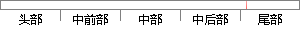

exe]，在右侧空白处单击右键，选择[新建]-[字符串值]，命名为[Debugger]；
片段位置图

相似结果|
相似片段 1：notepad．exe，位于％SystemRoot％＼system32文件夹中。)再到notepad．CXC项的右侧窗格空白处单击右键选择“新建”一“字符串值”，并命名为“Debugger”；接着双击
|
※ 片段修改建议 ※
近似词参考：- 右侧：右边
系统自动生成语句：exe]，在右边空白处单击右键，选择[新建]-[字符串值]，命名为[Debugger]；
注：本片段修改建议为系统自动生成，仅供参考。